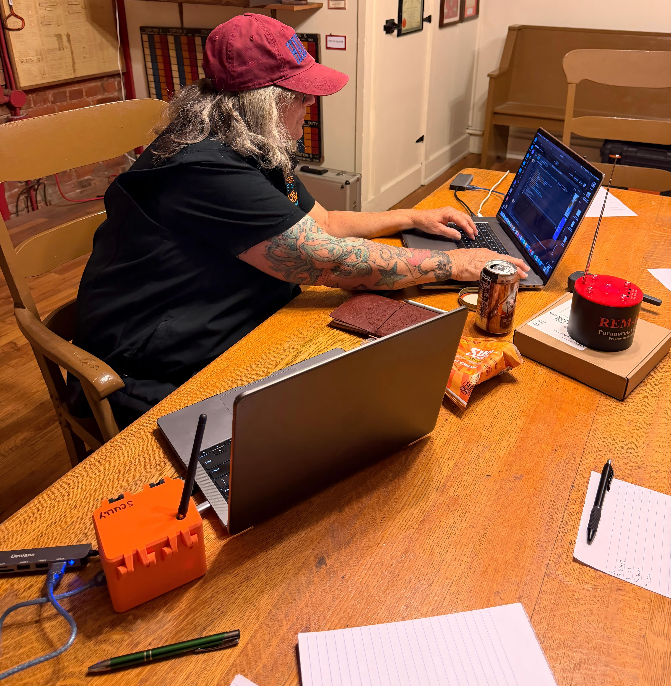
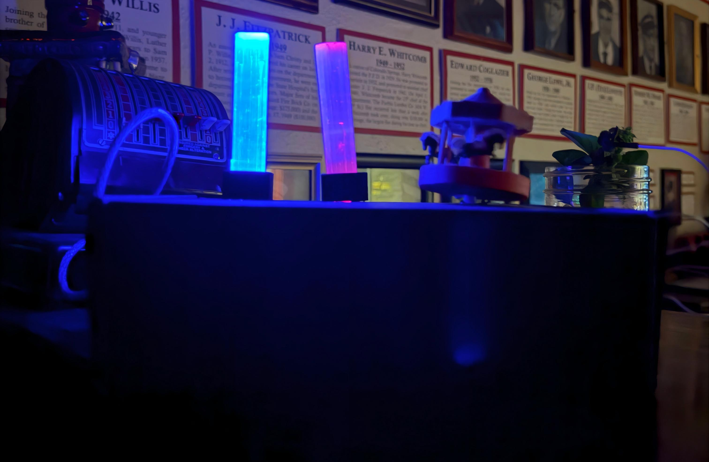

XCOM
An experimental investigation system currently in development, like a spirit board, exploring new ways to interact with and interpret potential anomalies.
Ideas Become Experiments
Every project has a story. Follow the journey from initial concept to prototype, field testing, and design refinement.
An experimental investigation system currently in development, like a spirit board, exploring new ways to interact with and interpret potential anomalies.

A field-testing project built on the same hardware platform as XCOM, exploring location-specific communication and experimental interaction.

A proximity device using a plant as a familiar trigger object to those in the spirit world, designed to support experimental field research.
A prototype is only part of the process. Testing, observation, and refinement help determine what to change in the next iteration.
Field notes and project updates will be added as new builds progress.